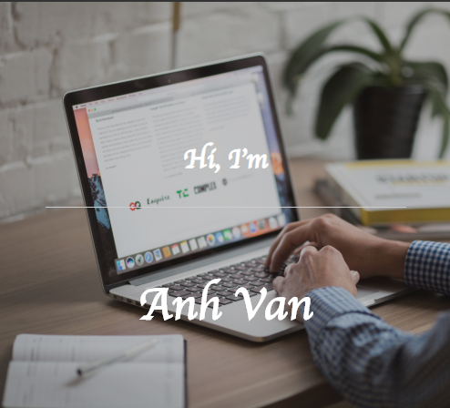
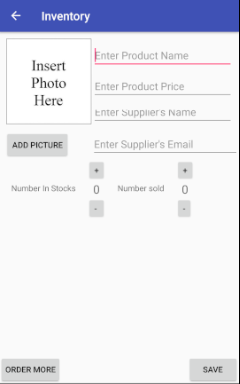

Project
Resume Website
Resume Website using HTML5, CSS and Javascript with the jQuery framework. Website is responsive using an mobile first design with an linear system and the HTML 5 grid system for destop. The navigation is also responsive to the size. As it goes to destop the full naviation appear and as it goes to mobile the navigation changes to a drop down menu. Drop down menu has a scrolling animation using jQuery.
Technologies includes: HTML5, CSS, Javascript and jQuery.
Retweet Project
Created python bot using Tweepy library to enter Twitter Sweepstakes. Retweeted tweet, follow user, likes and unfriend base on several criteria: tweet any variation of the statement “Retweet to Win”, follow if the word “follow” is in the tweet, like if the word “like” is in the tweet and unfriend base on a first in, first out approach when the friends count is 2000.
Technologies includes: Python
Easy Meme (iOS)

Developed an iOS app that used photo albums or cameras to create memes. Allows users to create, store, and share memes through Facebook and email while storing it using core data. Designed a custom restraint for layout through class size and a delegate for handling button in custom cell view.
Technologies includes: Swift
Inventory (Andriod)
Designed and created an Android app that tracks store’s inventory. Store information using SQlite. Pass information through intent while validating user's input.
Technologies includes: Java, XML